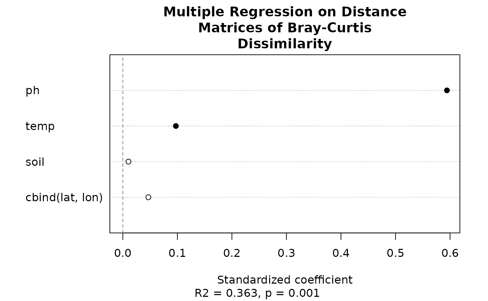

Regresses one distance matrix on several others: for instance, how much
of the differences in community composition between samples is explained
by their geographic distances and by their differences in pH and
temperature, and which of these matter once the others are accounted
for. This is multiple regression on distance matrices (MRM), the
multiple-regression extension of the mantel() test. It gives the same
coefficients, \(R^2\), \(F\), and permutation p-values as
ecodist::MRM(), computed in parallel C straight from the distances.
Usage
mantel_regression(
dm,
...,
data = NULL,
formula = NULL,
method = "pearson",
permutations = 999L,
backward = FALSE,
alpha = 0.05,
strata = NULL,
seed = 0L,
cpus = n_cpus()
)Arguments
- dm
The response: a
distobject, such as frombeta_div()orbray(), or a symmetric numeric matrix of distances. Must not containNAs. Its samples are the ones permuted. Alternatively, a formula with the distances on its left-hand side and the explanatory variables on its right, such asdm ~ ph + temp, in place offormula.- ...
Explanatory distances, each one term of the model, named as the term is to be called in the results (unnamed ones are called by what was written): such as
geo = dist(xy). Each is adistobject or a symmetric numeric matrix of distances, matched todm's samples by name when both have names, otherwise in the same order; or one value per sample (a vector, or, withdata, the name of a column), whose differences are the distances, as forformula's terms; or a numeric matrix or data frame of coordinates, one row per sample, whose Euclidean distances are used.- data
Sample metadata: a data frame with one row per sample, whose columns
formula,..., andstratacan name. Rows are matched to the samples indmby row name, and rows for other samples are ignored; without row names, they must be in the same order asdm. Default:NULL.- formula
A one-sided formula naming variables in
data, each one term of the model, such as~ ph + temp + cbind(lat, lon). A numeric variable's distances are its absolute differences between samples, \(|x_i - x_j|\), as formantel()'sy; a numeric matrix's (such ascbind(lat, lon)) are its Euclidean distances; and a factor's, character's, or logical's are 0 for two samples with the same value and 1 for two with different values. Terms may be expressions of the variables, such aslog(depth), but not interactions.formula's terms come first in the results, then those of.... Default:NULL.- method
'pearson', for ordinary least squares regression of the distances, or'spearman', for the same regression of their ranks:ecodist::MRM()'smrank = FALSEandmrank = TRUE. Default:'pearson'.- permutations
The number of permutations. Default:
999. Alternatively, a matrix with one permutation of1:nper row, as frompermute::shuffleSet(), to use instead of random ones. Give0for no p-values.- backward
Whether to simplify the model by backward elimination (Lichstein 2007): remove the least significant term, refit, and repeat until every term left has a p-value of at most
alpha. See Backward elimination. Default:FALSE.- alpha
With
backward = TRUE, the significance level a term's p-value must reach to stay in the model. Default:0.05.- strata
Permute samples only within these groups (blocks), for designs such as repeated measures. With
data, the name of one of its columns, or a vector with one value per row ofdata. Withoutdata, a vector with one value per sample, matched to the samples by name when it has names, otherwise in the same order. Default:NULL(free permutation).- seed
An integer seed for the random permutations. The same seed gives the same p-values. Default:
0- cpus
How many parallel processing threads should be used. The default,
n_cpus(), is the CPU cores this R process may use, within any limits set on it. Results are the same for anycpus.
Value
A list of class ecodive_mantel_regression, with:
coefficients: A data frame with one row for the intercept and one per term, and columns:term:'(Intercept)', then the terms' names.estimate: The regression coefficient, in units ofdm's distances per unit of the term's distances (of their ranks, for'spearman').ecodist::MRM()'scoef.std_estimate: The standardized coefficient,estimate * sd(term) / sd(dm)over the pairs, which can be compared between terms in different units.NAfor the intercept.t: The pseudo-t statistic,estimate / se(estimate).p_value: The permutation p-value oft, two-sided.ecodist::MRM()'spval.
r_squared: \(R^2\), the proportion of the variance ofdm's distances that the terms explain.F: The \(F\) statistic of the whole model.p_value: The permutation p-value of the whole model (of \(F\), and equally of \(R^2\)).df: The degrees of freedom of \(F\): the number of terms, and the number of pairs less the number of terms less 1. They are not those of the test, which is by permutation: the pairs aren't independent.n_perm: The number of permutations.method:'pearson'or'spearman'.n: The number of samples.permutation: How samples were permuted:'free','within strata', or'supplied matrix'.
With backward = TRUE, these describe the final model, and there are
also:
alpha: The significance level.elimination: A data frame with one row per term removed, in order (no rows if none was):step,term, itstandp_valuein the model it was removed from, and that model's \(R^2\) (r_squared_before) and the next one's (r_squared_after).
Attribute f_perm is a vector of the \(F\) statistics of the
permutations, and attribute t_perm a matrix of their pseudo-t
statistics, one row per permutation and one column per coefficient.
as.data.frame() gives coefficients, and plot()
draws the standardized coefficients.
Details
Method
MRM (Smouse et al. 1986; Legendre et al. 1994; Lichstein 2007) unfolds
each matrix into the vector of its \(N = n(n-1)/2\) distances between
pairs of samples, and fits the linear regression of dm's distances on
the terms', with an intercept, by least squares. The pairs aren't
independent of one another, so the p-values come from permutations of
the samples: the rows and columns of dm are shuffled together, the
explanatory distances are held fixed, and the regression is refitted
(Legendre et al. 1994). As in ecodist::MRM():
Each coefficient is tested with its pseudo-t statistic (Legendre et al. 1994), the coefficient divided by its standard error, rather than with the coefficient itself, two-sided: its p-value is the proportion of permutations, counting the observed one, with \(|t|\) at least as large.
The whole model is tested with \(F\) (equivalently, with \(R^2\)): the proportion of permutations, counting the observed one, with an \(F\) at least as large.
With method = 'spearman', each set of distances is replaced by its
ranks (average ranks for ties) before the regression: ecodist::MRM()'s
mrank = TRUE.
With a single term, \(R^2\) is the square of mantel()'s statistic,
and the test of \(F\) is the two-sided Mantel test.
Terms whose distances are collinear (one a linear combination of the others, or the same for every pair) are an error.
Backward elimination
With backward = TRUE, the model is simplified by backward elimination,
as in Lichstein (2007): the term with the largest p-value is removed if that p-value
is above alpha, the model is refitted without it, and so on, until
every term left has a p-value of at most alpha. Among terms with equal
p-values (permutation p-values often tie), the one with the smallest
\(|t|\) goes first. Every refit uses the same permutations, so the
steps, like the p-values, are the same from run to run and for any number
of cpus. If every term is removed, only the intercept is left: then
\(R^2\) is 0, and \(F\) and its p-value are NA. The intercept is
never removed.
The final model's p-values don't account for the selection, so they are
too small, as after any stepwise selection: report them as descriptive.
ecodist::MRM() has no backward elimination.
Speed and memory
The explanatory distances are centred and orthonormalized once (by QR).
Every statistic of a permutation then follows from their \(m\) products
with dm's permuted distances, computed in one pass over the pairs,
reading dm through the permutation: \(O(n^2 m)\) per permutation, for
\(m\) terms, with no \(n \times n\) matrix and no refit. Permutations
run in parallel.
Reproducibility
The permutations come from seed, not from R's random number generator,
so set.seed() has no effect, and each permutation has a random number
stream of its own. P-values are identical from run to run and for any
number of cpus. The random permutations differ from ecodist::MRM()'s,
so p-values agree with it only up to sampling error, unless the same
permutations are given to both.
Differences from ecodist::MRM()
The explanatory distances can be given as a formula of sample metadata, as one value per sample, or as coordinates, as well as distance matrices, and samples are matched by name between them all.
stratarestricts the permutations.permutationscounts the permutations besides the observed samples;ecodist::MRM()'snpermcounts the observed samples as one of them. Sopermutations = 999matchesnperm = 1000.There's no
method = 'logistic', for logistic regression of a binary response.backwardadds backward elimination of terms.
References
Legendre, P., Lapointe, F.-J., & Casgrain, P. (1994). Modeling brain evolution from behavior: a permutational regression approach. Evolution, 48(5), 1487-1499. doi:10.1111/j.1558-5646.1994.tb02191.x
Lichstein, J. W. (2007). Multiple regression on distance matrices: a multivariate spatial analysis tool. Plant Ecology, 188(2), 117-131. doi:10.1007/s11258-006-9126-3
Smouse, P. E., Long, J. C., & Sokal, R. R. (1986). Multiple regression and correlation extensions of the Mantel test of matrix correspondence. Systematic Zoology, 35(4), 627-632. doi:10.2307/2413122
Examples
# 30 samples at random locations, along a pH gradient that shifts
# the first five genera.
set.seed(1)
counts <- matrix(rpois(30 * 20, 5), 30, 20)
rownames(counts) <- paste0('S', 1:30)
meta <- data.frame(
row.names = rownames(counts),
ph = round(runif(30, 6, 8), 1),
temp = round(runif(30, 10, 20)),
soil = sample(c('clay', 'sand'), 30, replace = TRUE),
lat = runif(30, 30, 35),
lon = runif(30, -100, -95) )
counts[, 1:5] <- counts[, 1:5] + round(4 * (meta$ph - 6))
dm <- bray(counts)
# Community differences explained by differences in pH and
# temperature, soil type (same or different), and geographic distance.
res <- mantel_regression(dm ~ ph + temp + soil + cbind(lat, lon), data = meta)
res
#> Multiple Regression on Distance Matrices of Bray-Curtis Dissimilarity
#>
#> R2 = 0.3633, F = 61.34, p = 0.001
#> Permutations: 999 (free)
#> Regression: least squares on the distances
#> Samples: 30 (435 pairs)
#>
#> term estimate std_estimate t p_value
#> (Intercept) 0.1768 28.01 0.887
#> ph 0.05983 0.5943 15.43 0.001
#> temp 0.001917 0.09728 2.528 0.031
#> soil 0.0009952 0.01031 0.2676 0.722
#> cbind(lat, lon) 0.001958 0.04674 1.214 0.399
plot(res)

# The same with distance matrices, and with ranks.
geo <- dist(meta[, c('lat', 'lon')])
mantel_regression(dm, ph = dist(meta$ph), geo = geo, method = 'spearman')
#> Multiple Regression on Distance Matrices of Bray-Curtis Dissimilarity
#>
#> R2 = 0.3071, F = 95.74, p = 0.001
#> Permutations: 999 (free)
#> Regression: least squares on the ranks of the distances
#> Samples: 30 (435 pairs)
#>
#> term estimate std_estimate t p_value
#> (Intercept) 88.78 6.607 1.000
#> ph 0.5541 0.5535 13.82 0.001
#> geo 0.03862 0.03862 0.9641 0.492
# Keep only the terms that matter, by backward elimination.
mantel_regression(
dm ~ ph + temp + soil + cbind(lat, lon), data = meta, backward = TRUE )
#> Multiple Regression on Distance Matrices of Bray-Curtis Dissimilarity
#>
#> R2 = 0.361, F = 122, p = 0.001
#> Permutations: 999 (free)
#> Regression: least squares on the distances
#> Samples: 30 (435 pairs)
#>
#> term estimate std_estimate t p_value
#> (Intercept) 0.1824 43.47 0.736
#> ph 0.05965 0.5925 15.41 0.001
#> temp 0.001908 0.09682 2.517 0.032
#>
#> Backward elimination (alpha = 0.05): 2 terms removed
#> step term t p_value r_squared_before r_squared_after
#> 1 soil 0.2676 0.722 0.3633 0.3632
#> 2 cbind(lat, lon) 1.208 0.406 0.3632 0.361